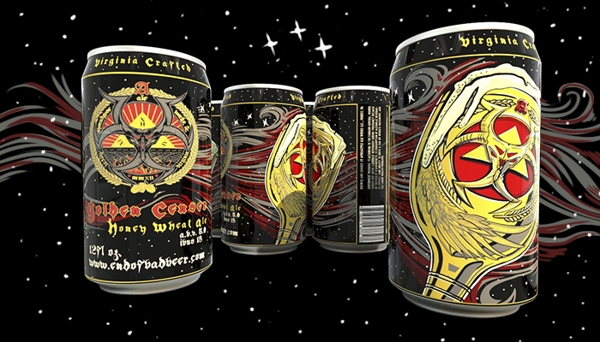

The Apocalpyse Has Begun!
The meaning of apocalypse is the end for a new beginning. The end of bad beer is here!
Apocalypse Ale Works is the first brewery in Forest, Virginia since Thomas Jefferson brewed in the 1800's at Poplar Forest. The brewery is located in the old Forest Volunteer Fire Department, beside Pints O'Plenty, and features a tasting room for the public to enjoy our latest and greatest recipes. Currently, kegs are distributed all over the state of Virginia, with an emphasis on supplying local restaurants first. Canning production is also underway, with two of our pillar brews paving the way and more to come in 2015. Our mission is to brew quality beer for all palates. The end of bad beer is here!
News
Craft cans are now available in stores. Pick up some of our Golden Censer: Honey Wheat Ale and Red Hoppocalypse: Imperial Ale today and enjoy high quality beer from the comfort of your home!
Golden Censer
Honey Wheat Ale

Hoppocalypse
Imperial Red Ale

Here's a sneak peek at our other brews, slated for release later this year. Come in and enjoy all our brews in our tasting room before they hit stores!
6th Seal
Chocolate Stout
Glorious Dead
English Amber Ale

Cenful Blonde
Belgian Style Blonde Ale
22 Oz Bombers

We also have a lineup of 22oz bombers on the horizon! Keep your eyes open for our Lustful Maiden, Heavy Red Horseman, a collaboration with Devils Backbone called Devil's secret and our 6th Seal Winter Snack. We couldn't be more excited for 2015.